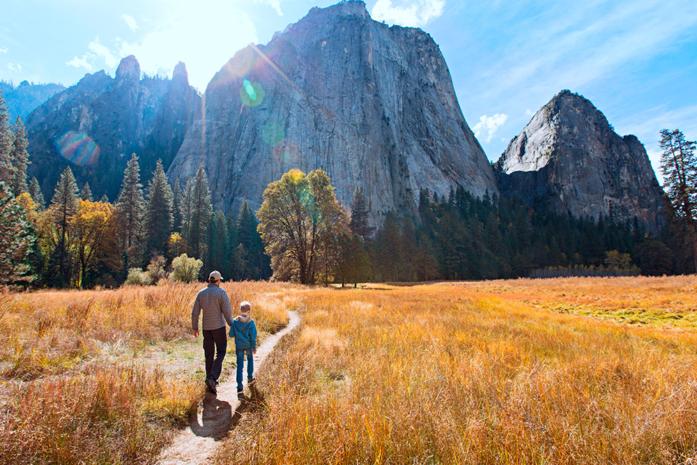

WKND Adventures
Adventures
Routes, guides, and trip reports for every kind of wild.
Every route here has been walked.
No desk research. No secondhand accounts. Pick a terrain, read the full account, then go.

Surfing
Lofoten Islands: Arctic Surfing at the Top of the World
Few surf destinations on Earth compress so much drama into a single wave. The Lofoten Islands rise straight from the Norwegian Sea — jagged, snow-capped, impossibly photogenic — and the swells that arrive from the open Atlantic break against a mountain backdrop that makes every other lineup feel small. Cold water, serious neoprene, and waves that have crossed thousands of kilometres of open ocean to reach you.
Browse by Activity


Choosing Your Adventure
The word "adventure" gets applied to a lot of things that don't deserve it — and it also gets withheld from things that do. At WKND, we think about adventure in three distinct registers: the day out, the weekend trip, and the expedition. Each demands a different level of preparation, commitment, and expectation-management, and conflating them is how people end up either bored or in trouble.
A day adventure is a defined outing with a clear return. You're out for 4–12 hours, you know roughly where you're going, and your margin for error is narrower than people admit — a twisted ankle at hour six is a real problem if you're six kilometres from the trailhead. Day adventures require proper footwear, water, navigation, and the judgment to turn around. They don't require a satellite communicator, but they do require honesty about your fitness level and the conditions forecast.
A weekend trip compounds those demands. You're now managing sleep, food resupply, changing weather, and fatigue in terrain you might not have scouted. The logistics get real. An expedition — three days minimum in genuinely remote terrain, camp-to-camp movement under load — is a different animal entirely, and we've written a separate guide to what that demands.
Our difficulty ratings are graded on three axes: physical demand, technical skill requirement, and remoteness. A route rated 3 on physical demand but 1 on technical skill is a long slog on a well-marked path — hard on the legs, forgiving on the nerves. A route rated 1 on physical demand but 3 on technical skill is a short but exposed scramble requiring genuine competence on rock or mixed ground. Remoteness is rated separately because it changes the calculation for everything else: a Grade 2 scramble ten minutes from a road is a fundamentally different proposition than the same scramble two days from the nearest habitation. Read all three axis scores before you judge a route's suitability for your party.
The "Verified" badge on a WKND route report means one of our contributors walked, paddled, or climbed that route within the past 18 months and filed a structured condition report covering: trailhead access, water sources, current hazards, navigation notes, and any changes from the published guidebook description. Unverified routes in our archive are clearly marked — they may be accurate, but we haven't checked them recently and conditions may have changed. When planning anything technical or remote, verified is the only kind of report worth trusting.
Recent Reports

W Circuit: 9 Days, 115 km
A full account of the W Circuit in Torres del Paine — permit strategy, daily stage breakdowns, refugio conditions, and the one weather window that made it worth every hour of planning.

Lofoten Islands: Arctic Surfing and Swell
Seven days surfing between the Lofoten peaks — swell windows, cold-water preparation, and why Unstad produces some of the best Arctic waves in Europe.

Six Days Through the High Alps by Bike
Stelvio, Gavia, Mortirolo, Gavia again — a self-supported traverse of the highest road passes in the Alps with notes on resupply, surface conditions, and which climbs to ride at dawn.
Adventure by Skill Level
First Ventures
Day hikes on waymarked trails, beginner cragging at bolted sport climbing areas, and guided surf lessons on mellow beach breaks. These adventures build the physical vocabulary and decision-making habits that everything else depends on. Don't rush past this stage — the people who do are the ones who get into trouble later.
Building Confidence
Multi-day routes with hut or wild camping, sport climbing at grades 5c–6b, intermediate ski touring on moderate glacier terrain. You're now navigating independently, managing weather decisions, and carrying consequence with your kit. The moves are technically within reach — the gap to close is judgment and composure under variable conditions.
Technical Terrain
Alpine ridge routes with mixed scrambling and glacier travel, trad climbing requiring lead competence and self-rescue awareness, big wave surfing above double-overhead, and ski mountaineering in avalanche terrain. This is where WKND's most detailed route reports live — because the cost of underestimating the objective goes up steeply in this tier.
Know your kit before you go.
The right gear doesn't guarantee a good adventure — but the wrong gear ends them early. Our gear guides are honest, tested, and written by people who actually used the stuff.